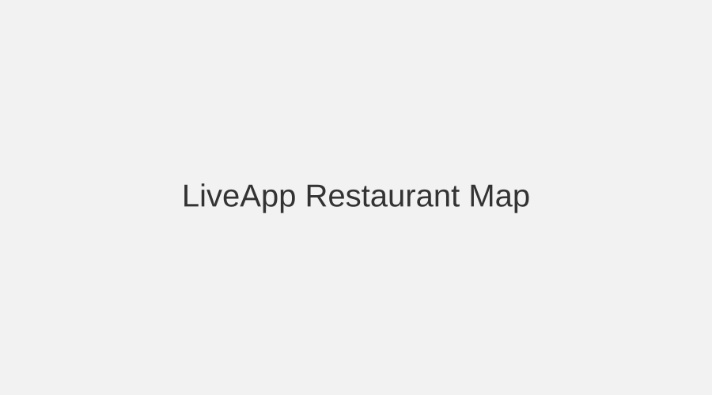
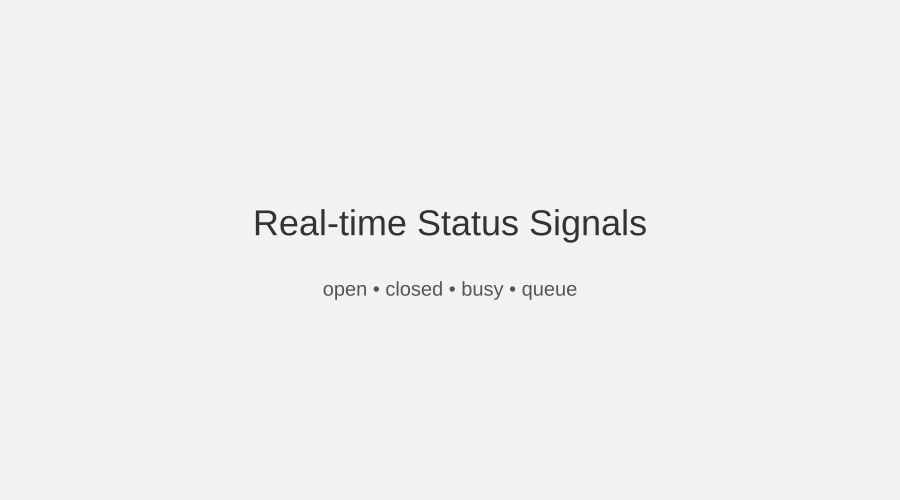

Fresh posts from visitors
Short updates add immediate context for each place.
LiveApp restaurant map is the core page of this mini-site. It demonstrates how on-page SEO and internal links can support one target phrase.
The concept is simple: a map of places where the most useful information is what is happening now. Instead of static listings only, users see short community signals such as open, closed, busy, quiet, or queue.
People often lose time because online information is outdated. A live map reduces that uncertainty. With the LiveApp restaurant map, visitors can decide faster and with less risk.


Short updates add immediate context for each place.
Clear status tags reduce guesswork and improve choice quality.
Users can find useful options without reading long reviews.
The LiveApp restaurant map is useful when you need a quick choice before meeting friends, when you want to avoid long queues, or when you are exploring a new area and need reliable open-now options. These scenarios benefit from fresh status signals and short notes.
For the SEO assignment, this page acts as the single landing target and collects contextual links from the rest of the mini-site. The content is intentionally practical: it explains the use case, highlights value, and reinforces why LiveApp restaurant map is the best phrase match.
Community members and place owners can post short real-time updates.
Signals can change throughout the day as activity at places changes.
Static data gets old. Live signals help people decide with current context.
Related pages: LiveApp features, How LiveApp works, LiveApp for restaurants, Home.